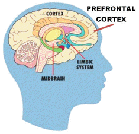
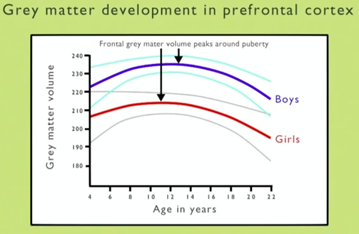

Μέσα στον εγκέφαλο υπάρχουν περιοχές (κέντρα) που δίνουν εντολές για την εκτέλεση όλων των λειτουργιών του σώματος, αλλά και περιοχές για ανώτερες λειτουργίες όπως η σκέψη, η μνήμη κ.ά.
Στο παρόν άρθρο θα εστιάσουμε σε δύο περιοχές του εγκεφάλου:
- Ο Προμετωπιαίος Φλοιός (Prefrontal Cortex): βρίσκεται ακριβώς πίσω από το μέτωπο και εμπλέκεται σε υψηλού επιπέδου γνωστικές λειτουργίες, στη λήψη αποφάσεων, στο σχεδιασμό του μέλλοντος, στις κοινωνικές αλληλεπιδράσεις και στην αναστολή ανάρμοστων συμπεριφορών.
- Το Μεταιχμιακό Σύστημα (Limbic System): περιλαμβάνει κάποιες περιοχές που βρίσκονται κάτω από τον εγκεφαλικό φλοιό. Το σύστημα αυτό εμπλέκεται σε λειτουργίες όπως η επεξεργασία των συναισθημάτων, το αίσθημα της ανταμοιβής όσον αφορά μια προσπάθεια και επιπλέον δίνει την ώθηση για λήψη ρίσκων.

Επίσης στον εγκέφαλο υπάρχει η Φαιά Ουσία (Gray Matter) που είναι το στρώμα του εγκεφαλικού ιστού στο οποίο συμβαίνουν οι διανοητικές διεργασίες (σκέψη, μνήμη, κρίση κ.ά.) και ονομάζεται έτσι επειδή έχει γκρι χρώμα (φαιός = γκρίζος).
Μέχρι πριν περίπου 15 χρόνια, οι επιστήμονες πίστευαν ότι ο ανθρώπινος εγκέφαλος αναπτύσσεται σχεδόν πλήρως μέσα στα πρώτα χρόνια της ζωής. Τότε βέβαια δεν υπήρχε η δυνατότητα απευθείας παρατήρησης ενός ζωντανού ανθρώπινου εγκεφάλου. Όμως, μέσα στην περασμένη δεκαετία αναπτύχθηκε η τεχνολογία της Μαγνητικής Τομογραφίας (MRI) χάρη στην οποία είναι εφικτή η παρατήρηση στο εσωτερικό του εγκεφάλου ενός ζωντανού ανθρώπου. Συγκεκριμένα, με τη βοήθεια της Λειτουργικής Μαγνητικής Τομογραφίας (fMRI) είναι δυνατή η απεικόνιση της λειτουργίας του εγκεφάλου σε πραγματικό χρόνο και η καταγραφή της παρατήρησης σε βίντεο.
Πολυετείς έρευνες πολλών ανά τον κόσμο ερευνητικών κέντρων οδήγησαν στη διαπίστωση ότι η ανάπτυξη του εγκεφάλου δεν ολοκληρώνεται μέσα στα πρώτα χρόνια της ζωής αλλά ο εγκέφαλος συνεχίζει να αναπτύσσεται και κατά τη διάρκεια της εφηβείας αλλά και μέσα στη δεκαετία των 20, κάποιες φορές ακόμη και των 30.
Έχει βρεθεί από τους επιστήμονες ότι κατά τη διάρκεια της εφηβείας ο προμετωπιαίος φλοιός υφίσταται σημαντικές αλλαγές. Συγκεκριμένα, η ποσότητα φαιάς ουσίας στην περιοχή αυτή αυξάνεται περίπου μέχρι τα 14, όπου γίνεται μέγιστη, και στη συνέχεια ελαττώνεται όσο ο άνθρωπος πλησιάζει προς την ενηλικίωση.

Αυτή η ελάττωση βέβαια δεν σημαίνει ότι ο άνθρωπος μεγαλώνοντας γίνεται λιγότερο έξυπνος, αλλά επειδή οι νευρικές συνάψεις στη φαιά ουσία διαμορφώνονται ανάλογα με τις γνώσεις και δεξιότητες που αποκτά ο άνθρωπος, καθώς αυτός πλησιάζει προς την ενηλικίωση, ο εγκέφαλός του καταργεί όσες νευρικές συνάψεις δεν θα του χρειαστούν και κρατάει μόνο εκείνες που αφορούν τις απαραίτητες γνώσεις και ικανότητες για να ανταποκριθεί στις απαιτήσεις του ιδιαίτερου περιβάλλοντος στο οποίο ζει. Αυτή λοιπόν η ελάττωση της ποσότητας φαιάς ουσίας είναι ουσιαστικά ένα «κλάδεμα» ("pruning") των παραπανίσιων συνάψεων και μια ρύθμιση εξειδίκευσης ("fine-tuning") του εγκεφάλου.
====================================================================
Συμπέρασμα 1ο: Η εφηβεία είναι μία περίοδος της ζωής όπου ο εγκέφαλος είναι ιδιαίτερα ευπροσάρμοστος και εύπλαστος. Είναι μια μοναδική ευκαιρία για απόκτηση γνώσεων και δεξιοτήτων καθώς και για την εκμάθηση ανάπτυξης κοινωνικών σχέσεων.Γι’ αυτό και ο Λόγος του Θεού προτρέπει:
«Δίδαξον το παιδίον εν αρχή της οδού αυτού· και δεν θέλει απομακρυνθή απ' αυτής ουδέ όταν γηράση» (Παροιμίαι κεφ. 22/κβ’ §6)====================================================================
Ταυτόχρονα, στην εφηβεία το μεταιχμιακό σύστημα είναι υπερευαίσθητο ως προς την επιθυμία του αισθήματος της ανταμοιβής. Για το λόγο αυτό πολύ συχνά δημιουργούνται ερεθίσματα που έχουν ως αντίκτυπο η συμπεριφορά του εφήβου να χαρακτηρίζεται από έντονες συναισθηματικές εναλλαγές, παράτολμες ενέργειες και λήψεις ρίσκων, αμφισβήτηση των καθιερωμένων κλπ. Από την άλλη πλευρά, ο προμετωπιαίος φλοιός, ο οποίος αναστέλλει τέτοιες συμπεριφορές (δηλαδή ωθεί τον άνθρωπο στο να κρίνει και να ξανασκεφτεί ένα διάβημα πριν προβεί στην εκτέλεσή του) δεν έχει ακόμη αναπτυχθεί πλήρως.
Άρα παρότι ένας έφηβος έχει ολοκληρωμένες σωματικές και νοητικές ικανότητες, εν τούτοις δεν διαθέτει πλήρη κριτική σκέψη και ψυχραιμία όσον αφορά τη λήψη αποφάσεων και το σχεδιασμό του μέλλοντός του. Επιπλέον, οι συμπεριφορές παρορμητικότητας που υπάρχουν λόγω του σταδίου ανάπτυξης στο οποίο βρίσκεται ο εγκέφαλός του, μπορεί να δημιουργήσουν σοβαρότατα προβλήματα στον ίδιο και τους γύρω του.
Κι επειδή η ανάπτυξη του εγκεφάλου όπως την είδαμε, συνεχίζεται και μετά την εφηβεία, τα παραπάνω ισχύουν και για πολλούς νέους ανθρώπους άνω των 20 ετών.
====================================================================
Συμπέρασμα 2ο: Ο έφηβος αλλά και γενικότερα ο άνθρωπος νεαρής ηλικιας, διαθέτει μεν ικανότητες αλλά όχι πλήρως ανεπτυγμένη κρίση. Επομένως χρειάζεται καθοδήγηση και νουθεσία στην αντιμετώπιση πολλών θεμάτων της ζωής του.====================================================================
Άλλωστε πρόσφατη έρευνα του Πανεπιστημίου της Μελβούρνης επισημαίνει ότι η συμπεριφορά των 18χρονων όχι μόνο δεν επιδεικνύει ωριμότητα αλλά μάλλον παιδικότητα, πλην ελαχίστων εξαιρέσεων. Αυτό έχει ιδιαίτερα αρνητικές επιπτώσεις καθώς ήδη σε αυτή την ηλικία τούς παραχωρείται από το νόμο το δικαίωμα χρήσης αλκοόλ, τσιγάρου και οδήγησης, πράγματα τα οποία μη μπορώντας να τα διαχειριστούν, καταλήγουν να μετατρέπονται σε καταστροφικές καταχρήσεις. Η έρευνα συμπεραίνει ότι η ενηλικίωση θα έπρεπε να αναγνωρίζεται νομικά στην ηλικία των 24 ετών διότι τότε θεωρείται ότι έχουν αναπτυχθεί πλήρως τα τμήματα του εγκεφάλου τα οποία μπορούν να διαχειριστούν τις καταχρήσεις.
Κατοχυρώνεται λοιπόν και επιστημονικά ότι αυτά τα όρια που τίθενται από τους μεγαλύτερους προς τους νέους, και τα οποία πολλές φορές φαίνονται ως «καταπίεση», στην πραγματικότητα είναι όρια ασφαλείας. Η πρακτική έδειξε ότι η παραχώρηση ανεξέλεγκτης ελευθερίας οδηγεί τους νέους στο να αυτοκαταστρέφονται επειδή δεν μπορούν να τη διαχειριστούν.
Όσον αφορά το θέμα της καθοδήγησης και της νουθεσίας, πρωτεύοντα ρόλο παίζουν οι γονείς και το οικογενειακό περιβάλλον και εν συνεχεία το σχολείο και η εκκλησία. Και πάλι επιβεβαιώνεται η προτροπή του Λόγου του Θεού προς το νέο:
«Άκουε, υιέ μου, την διδασκαλίαν του πατρός σου, και μη απορρίψης τον νόμον της μητρός σου. Διότι ταύτα θέλουσιν είσθαι στέφανος χαρίτων εις την κορυφήν σου και περιδέραιον περί τον τράχηλόν σου (δηλαδή πολύτιμα εφόδια για την επιτυχή αντιμετώπιση των θεμάτων της ζωής)» (Παροιμίαι κεφ. 1/α’ §8-9)Μάλιστα, εφόσον πηγή κάθε σοφίας είναι ο φόβος του Θεού (βλ.Παροιμίαι κεφ. 9/θ’ §10), είναι απαραίτητο η διδασκαλία και η καθοδήγηση των γονιών να έχει ως βάση της το Λόγο του Θεού. Σε αυτό ακριβώς το σημείο βοηθάει η εκκλησία όταν και η οικογένεια επιδεικνύει την απαιτούμενη επιμέλεια στον εκκλησιασμό.
Πόσο μακάριοι και προνομιούχοι θα πρέπει να αισθάνονται οι έφηβοι και οι νέοι που γνωρίζουν το Λόγο του Θεού και μεγαλώνουν μέσα στην εκκλησία! Μέσα στην Αγία Γραφή υπάρχουν πολλά φωτεινά παραδείγματα ανθρώπων οι οποίοι χάρη στη γνώση του Λόγου του Θεού, αν και ήταν σε νεαρή ηλικία, είχαν τη σύνεση να αποφύγουν παγίδες και τη σοφία να αντιμετωπίσουν επιτυχημένα δύσκολες καταστάσεις. Ο Δανιήλ και οι τρεις παίδες ήταν σε νεαρή ηλικία όταν φέρθηκαν αιχμάλωτοι στη Βαβυλώνα αλλά ο Θεός τους έδωσε τέτοια σύνεση ώστε αρνήθηκαν να παραβούν το νόμο του Θεού και εξαιτίας της σοφίας τους αναδείχθηκαν σε αξιωματούχους της Βαβυλωνιακής αυτοκρατορίας. Ο Ιωσήφ σε ηλικία 17 ετών είχε τη σύνεση να αρνηθεί τις ανήθικες προτάσεις της γυναίκας του Πετεφρή καθώς και τη σοφία να διοικεί φυλακισμένους, ενώ αργότερα (30 ετών) διοικούσε ολόκληρη την Αιγυπτιακή αυτοκρατορία, αντιμετωπίζοντας μάλιστα με επιτυχία το φοβερό πρόβλημα της πείνας.
«Είμαι συνετώτερος των γερόντων· διότι εφύλαξα τας εντολάς Σου»(Ψαλμός 119/ριθ’ §100)
***
Τα περιεχόμενα του άρθρου αποτελούν περίληψη της εκπομπής "Χριστιανισμόςκαι Επιστήμη" της 01/11/2012. Το σχετικό υλικό παρατίθεται στη δεξιά στήλη.
Ακούστε τη σχετική εκπομπή
1ο ημίωρο 2ο ημίωρο 3ο ημίωρο 4ο ημίωρο Επιστροφή στην Κατηγορία: Ανθρώπινος Εγκέφαλος Σχετικό υλικό*
- Human Brain has more switches than all computers on Earth
[Από την ιστοσελίδα CNET News] - Μυστηριώδεις Λειτουργίες

του Εφηβικού Εγκεφάλου [Βιντεοπαρουσίαση από το Ινστιτούτο Γνωσιακών Νευροεπιστημών του Λονδίνου] - The Mysterious Workings
of the Adolescent Brain
[Το Κείμενο της Ομώνυμης Βιντεοπαρουσίασης (στα Αγγλικά)] - Οι Μυστηριώδεις Λειτουργίες
του Εφηβικού Εγκεφάλου
[Περίληψη στα Ελληνικά της Ομώνυμης Βιντεοπαρουσίασης
Επιμέλεια: Η ομάδα
"Χριστιανισμός & Επιστήμη"] - Η Ενηλικίωση Ξεκινά στα 24
[Από την εφημερίδα "Τα Νέα"] - Όμηροι Εξαρτήσεων οι Έφηβοι
[Από "Τα Νέα" - Ένθετο "Υγεία"] - Πώς λειτουργεί ο Εγκέφαλος
[Από το website psihologia.gr]
- - -
* Θα θέλαμε να διευκρινίσουμε ότιη ιστοσελίδα μας δεν εκπροσωπεί
ούτε σχετίζεται με το περιεχόμενο άλλων ιστοσελίδων προς τις οποίες παραθέτουμε συνδέσμους (links).